Bread on rye starter that bakes in a tin and needs no talent for shaping. About 20 minutes of your hands in total — the rest of the time the dough works on its own. Rye is not about gluten. Rye is about patience.
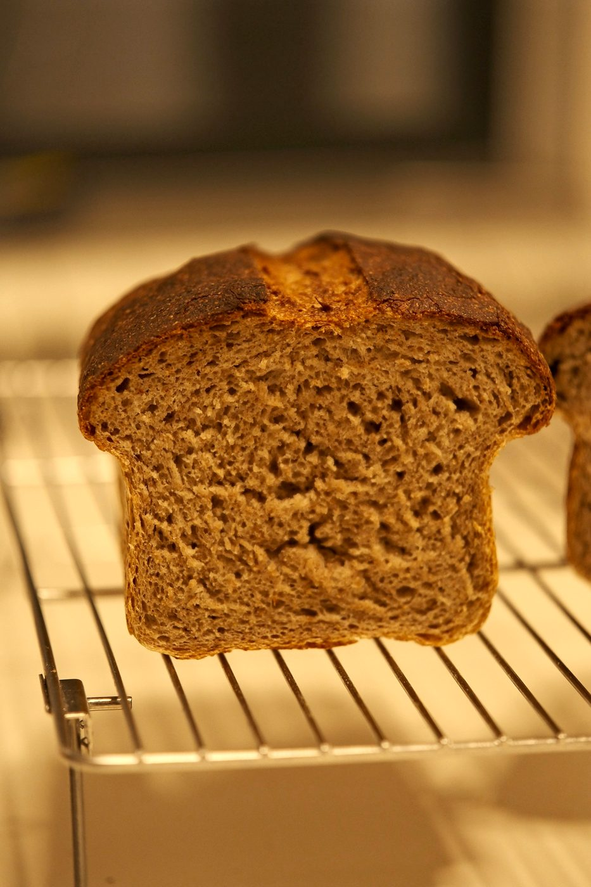
No banneton, no dutch oven, no shaping. The tin does the shaping for you. Wet hands do the rest.
| ingredient | small loaf 600 g | big loaf 1150 g |
|---|---|---|
| rye starter · 100% | 136 g | 260 g |
| rye flour | 51 g | 98 g |
| whole wheat flour | 51 g | 97 g |
| white bread flour | 169 g | 325 g |
| water | 186 g | 357 g |
| salt | 7 g | 13 g |
| tin, about | 20×10 cm | 26–28×11 cm |
Inside the starter: 68 g rye flour + 68 g water (600 g loaf), 130 g + 130 g (1150 g loaf). All the flour together is 339 / 650 g, all the water 254 / 487 g. The starter is 40% of all the flour, and its flour and water are already counted in the 75%.
I baked the big one: 1150 g of dough. Take a roomy tin — rye grows up, not sideways, and it needs space to do it.
This bread can be made in any tin, but it shows itself best in a metal one: it won't let the dough spread and lose volume.
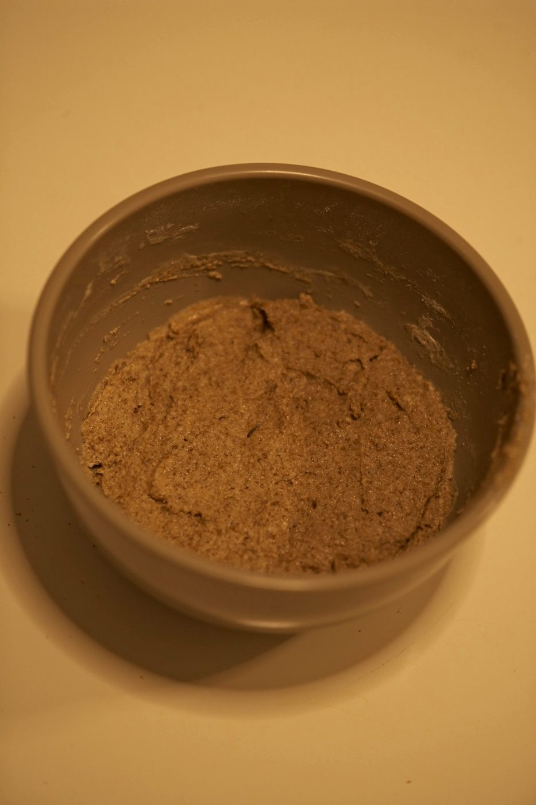
A calculator that rewrites this recipe for you. Pick the version — same day (40% starter), overnight (20%) or more sour (70%) — then type in the flour you have or the dough you want, and it tells you how many grams of everything to weigh.
All weights are dough. In the oven a loaf loses some water: 1150 g of dough → about 1000 g of bread. The starter is rye, 100%: feed it separately, its flour and water are already counted.
Starter: rye, 100% (equal rye flour and water). The rye inside it is already counted in the recipe.
Mixing, salt, one fold, a log into the tin. Then you go live your life while the dough rises, and come back to bake. The reel shows every step; below, each step has its own video and the details.
no dry flour — and walk away
sticky? good. wet your hands
this is all the shaping there is
domed and nearly at the rim — time to heat the oven
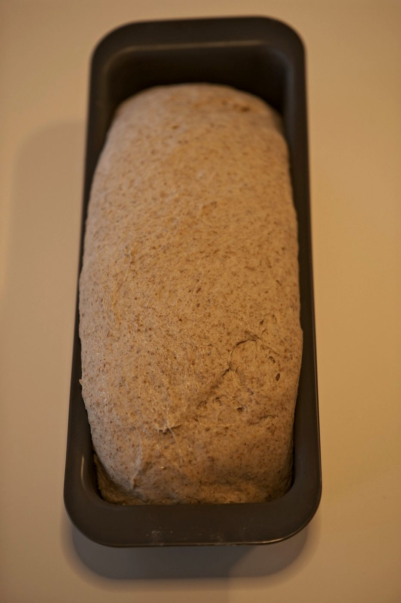
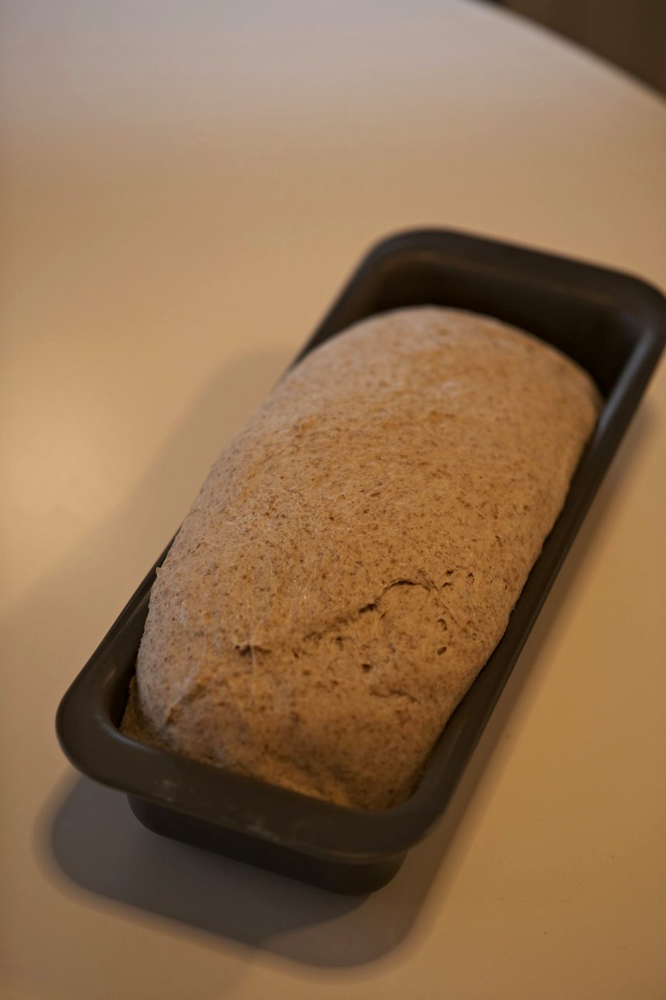
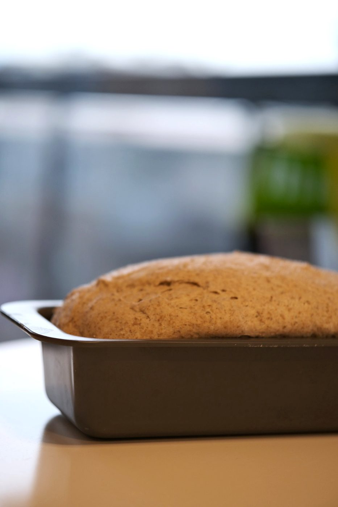
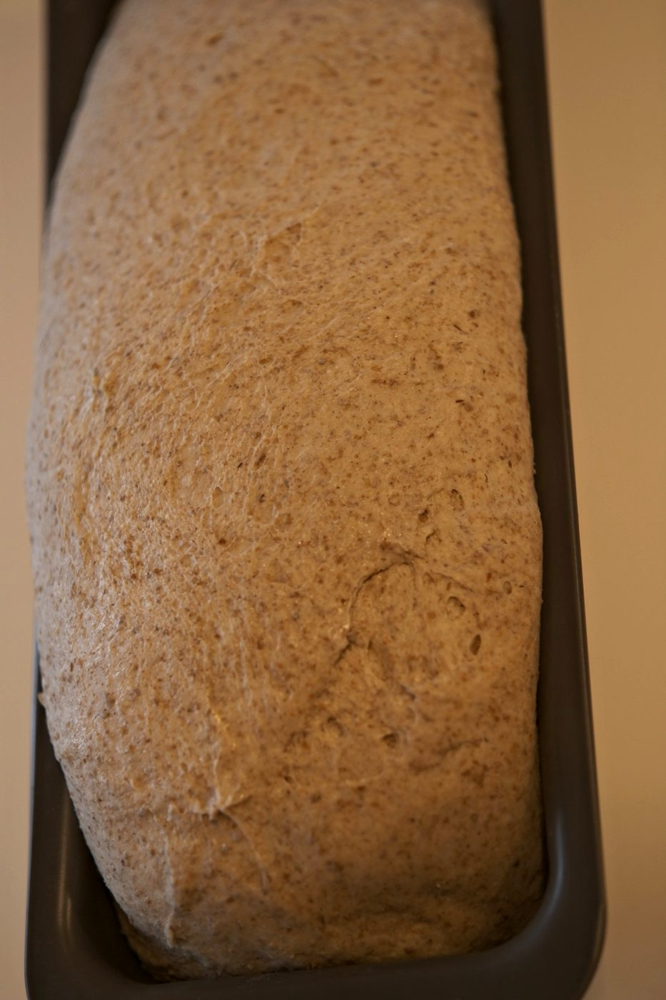
a dark crust on rye is flavour, not a mistake
the hardest step in the whole recipe
My bread was baked without an overnight proof, but you can change the recipe and use only 20% starter of the flour (the grams are on the right). In that case, after the shaping step, send the dough to proof in the fridge overnight. In the morning, if the dough still needs volume, take it out into the kitchen while the oven heats up. If the dough has risen in the fridge on its own, bake it straight from the cold!
| ingredient | 600 g | 1150 g |
|---|---|---|
| rye starter · 100% | 68 g | 130 g |
| rye flour | 85 g | 163 g |
| whole wheat flour | 51 g | 97 g |
| white bread flour | 169 g | 325 g |
| water | 220 g | 422 g |
| salt | 7 g | 13 g |
Inside the starter: 34 g rye flour + 34 g water (600 g loaf), 65 g + 65 g (1150 g loaf). All the flour and water stay the same: 339 / 650 g and 254 / 487 g, 75% hydration. Less starter means slower fermentation and a wider window — handy for a night in the fridge, and the bread is a little milder.
Starter at 70% instead of 40% — all the rye flour goes through the starter, and you don't add separate rye to the dough. The bread will be more sour and denser, and fermentation will run faster: watch the dough, not the clock.
| ingredient | 600 g | 1150 g |
|---|---|---|
| rye starter · 100% | 238 g | 456 g |
| whole wheat flour | 51 g | 97 g |
| white bread flour | 169 g | 325 g |
| water | 135 g | 259 g |
| salt | 7 g | 13 g |
| problem | possible cause |
|---|---|
| Gummy, sticky crumb | Cut too early, or underbaked — check 96–98 °C inside |
| The top sank or went flat | Overproofed — bake earlier next time |
| Dense crumb, torn sides | Underproofed — wait for the dome |
| Spilled over the tin | Tin too small for the dough |
| Too sour | Starter too ripe, or the proof ran long in a warm kitchen |
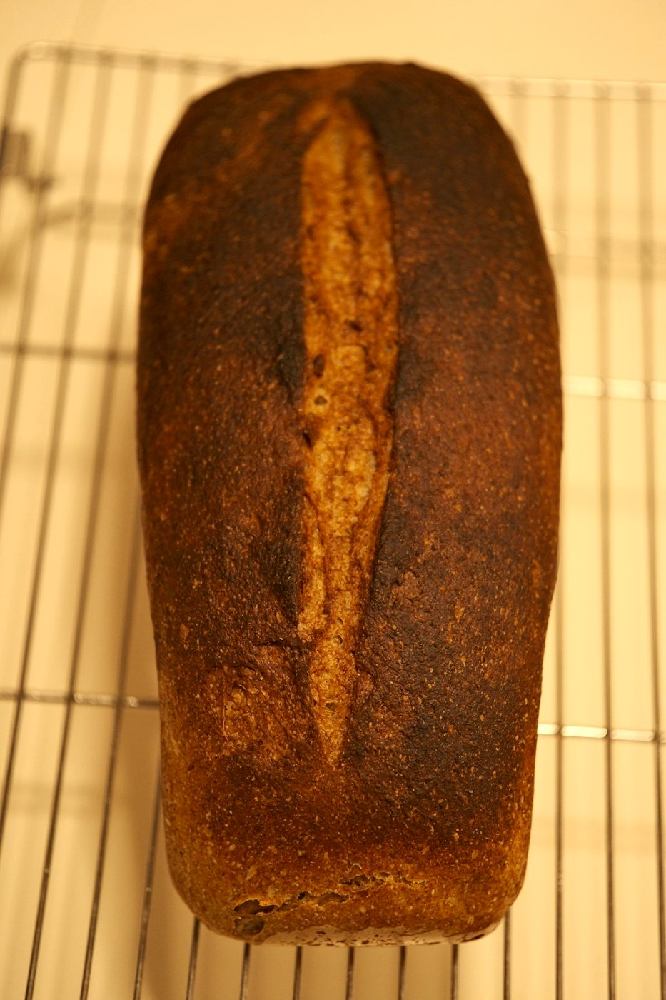
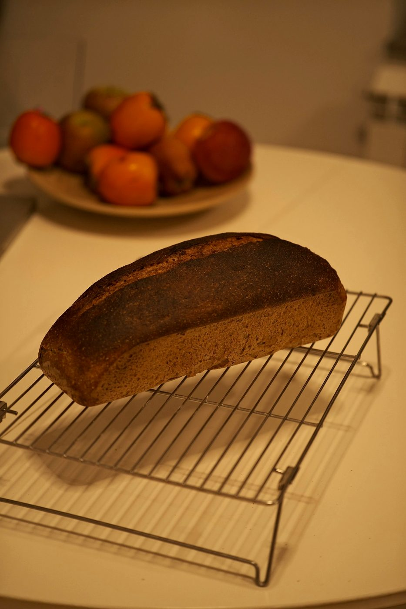
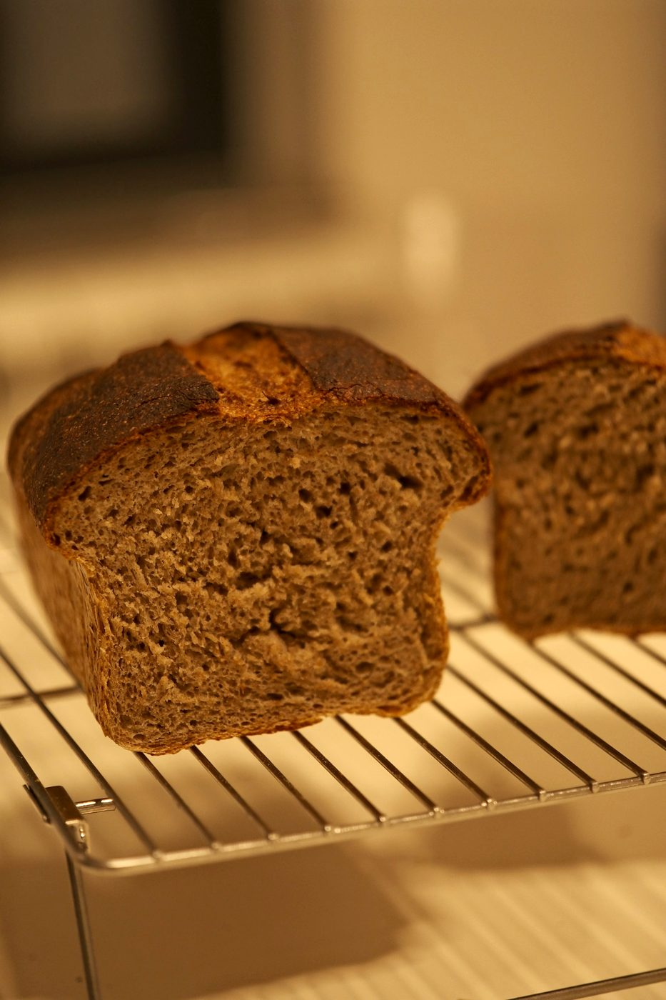
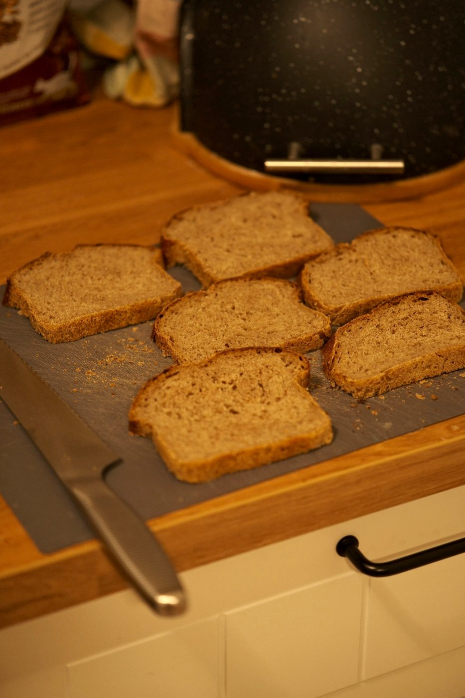
The taste is rich, slightly salty, with a light sourness from the rye flour and an excellent crust. Note that because of the large amount of whole-grain flour, the crust comes out darker than on white bread — that's normal!
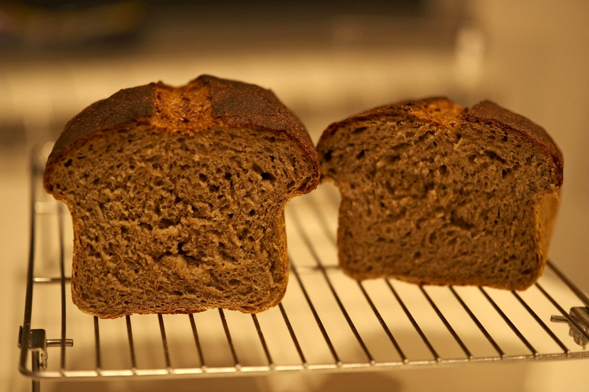